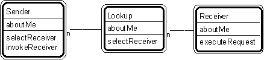

Pattern #29. "Sender-Lookup-Receiver" Pattern // interaction patterns

Typical object interactions
- sender.selectNextReceiver --> lookup.selectReceiver, followed by . . .
- sender.invokeReceiver --> receiver.executeRequest
Examples
- saleAnalysisWindow.lookupLineItem --> sale.lookupLineItem, followed by . . .
- saleAnalysisWindow.calcLineItemProfit --> sale.calcProfit
Combinations
- Superimpose upon participant - transaction - transaction line item.
- Superimpose upon three (or more) interacting pattern players.
Note
- This approach keeps lookup object simpler.